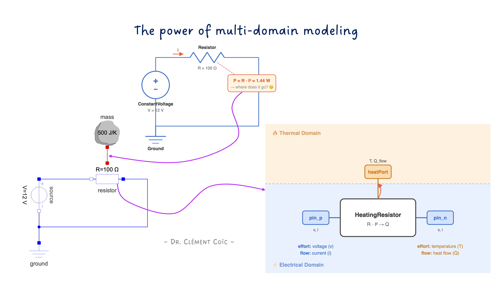
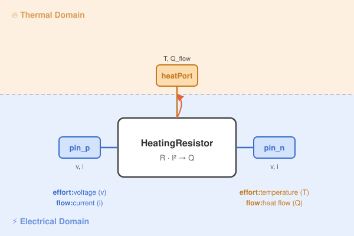
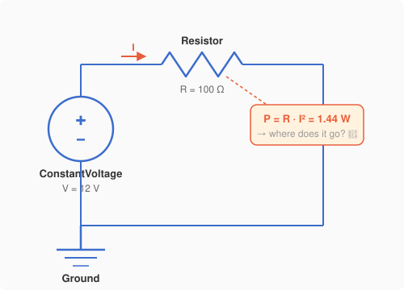
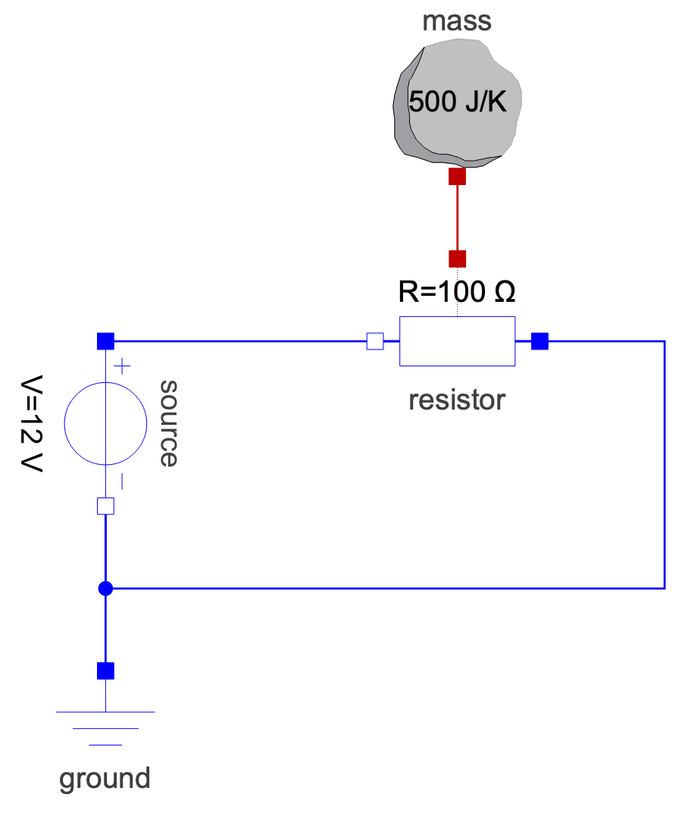

Multi-Domain Modeling — When Heat Meets Electricity

I hope you’ve got your preferred drink in hand ☕️🫖💧
Here’s something you’ve done a thousand times: you plug in a device, it gets warm. A phone charger. A laptop. A toaster. Electricity goes in, heat comes out. You don’t think twice about it.
But if you had to model that — the electrical current flowing through a resistance AND the heat it generates AND the temperature rising — you’d be dealing with two completely different physical domains at once. Sounds complicated, right?
Plot twist: in Modelica, it’s almost embarrassingly simple. 😅
Today we’re going to build a model that spans two domains — electrical and thermal — and you’ll see why people call multi-domain modeling Modelica’s killer feature.
One Domain Is Nice, Two Is Better
So what does it actually mean to model across two physical domains?
Let’s take a concrete example. You have a simple electrical circuit: a voltage source pushes current through a resistor. Classic stuff — Ohm’s law, nothing exotic.
But here’s the thing: that resistor dissipates energy. The electrical power \(P = R \cdot I^2\) doesn’t just vanish — it turns into heat. The resistor gets warmer. And if the resistor is attached to something (say, a chunk of metal), that something gets warmer too.
So what started as a purely electrical problem is now also a thermal problem:
- Electrical side: voltage, current, resistance → determines how much power is dissipated
- Thermal side: heat flow, thermal mass, temperature → determines how hot things get
These two sides are coupled. The electrical domain produces heat. The thermal domain absorbs it. You can’t fully understand one without the other.
In a traditional modeling approach, you’d handle this by computing the power on the electrical side, then manually feeding it as an input signal to a separate thermal model. That works… but it’s fragile. You’re breaking the physics into disconnected pieces and gluing them together with signals. It’s like translating a conversation through Google Translate — the meaning gets through, but the nuance is lost. 😅
Ok, I apologize, these tools are getting really good…
What if, instead, the model itself knew how to be both electrical AND thermal at the same time?
That’s exactly what Modelica does.

The key insight is this: a single component can have connectors from different physical domains. Our resistor has electrical Pin connectors (voltage + current) on each side, AND a thermal HeatPort connector (temperature + heat flow) on top. One component, two domains, zero drama. 🎉
Building the Multi-Domain Model
Time to build this thing. We’ll go step by step — starting electrical, then adding thermal.
The electrical circuit
Let’s start with a dead-simple electrical circuit: a DC voltage source pushes current through a resistor. Nothing thermal yet — just electrons doing their thing.

We’ve got 12 volts, 100 ohms, so \(I = V/R = 0.12\,A\) and the dissipated power is \(P = R \cdot I^2 = 1.44\,W\). That power has to go somewhere. But in this model, it just… disappears into the void. 🕳️
(Thermodynamics is screaming right now.)
Enter Modelica’s Resistor
The Modelica Standard Library has a component that fixes this: Modelica.Electrical.Analog.Basic.Resistor. It’s just like a regular resistor, but with one extra connector sticking out — a HeatPort that you can activate (remember our conditional models?).
That HeatPort is the bridge between domains. The electrical side computes the dissipated power, and instead of throwing it away, it pushes it out through the heat port as a heat flow \(\dot{Q}\).
Let’s swap it in and connect it to a thermal mass:
model JouleHeating "Electrical resistor heating up a thermal mass"
// === Electrical components ===
Modelica.Electrical.Analog.Sources.ConstantVoltage source(V=12)
"12V DC source"
annotation(Placement(transformation(origin = {-70, -80}, extent={{-80,-10},{-60,10}}, rotation = -90)));
Modelica.Electrical.Analog.Basic.Resistor resistor(
R=100,
useHeatPort=true)
"100 Ohm resistor with heat port enabled"
annotation(Placement(transformation(origin = {-27.264, 0}, extent={{-10,-10},{10,10}}, rotation = -180)));
Modelica.Electrical.Analog.Basic.Ground ground
"Reference potential"
annotation(Placement(transformation(extent={{-80,-60},{-60,-40}})));
// === Thermal components ===
Modelica.Thermal.HeatTransfer.Components.HeatCapacitor mass(
C=500, T(start=293.15, fixed=true))
"Thermal mass: 500 J/K, starting at 20°C"
annotation(Placement(transformation(origin = {-57.288, -10}, extent={{20,30},{40,50}})));
equation
// Electrical connections
connect(source.p, resistor.p)
annotation(Line(points={{-70, 0}, {-50, 0}, {-50, 0},{-17.264,0}}, color={0,0,255}));
connect(resistor.n, source.n)
annotation(Line(points={{4.84,0},{40,0},{40,-30},{-27.897,-30},{-27.897,-20}},
color={0,0,255}, origin = {-42.103, 0}));
connect(source.n, ground.p)
annotation(Line(points={{-70,-20}, {-70, -20}, {-70, -20},{-70,-40}}, color={0,0,255}));
// ⭐ The multi-domain connection:
connect(resistor.heatPort, mass.port)
annotation(Line(points={{-27.264,10},{-27.264,20},{-27.288,20},{-27.288, 20}},
color={191,0,0}));
end JouleHeating;Look at that last connect statement. That’s it. That’s the whole multi-domain coupling. One line. 🤯

No manual computation of \(P = R \cdot I^2\). No signal routing. No unit conversion. The Resistor knows that it dissipates electrical energy as heat, and the HeatPort carries that heat to whatever is connected on the other side.
What’s actually inside Resistor?
You might be wondering: what makes Resistor special? Let’s peek inside (simplified for clarity):
model Resistor
import Modelica.Units.SI;
// Electrical connectors
Modelica.Electrical.Analog.Interfaces.Pin p, n;
// Thermal connector
Modelica.Thermal.HeatTransfer.Interfaces.HeatPort_a heatPort;
parameter SI.Resistance R_ref "Resistance at reference temperature";
SI.Resistance R "Actual resistance";
SI.Voltage v "Voltage across resistor";
SI.Current i "Current through resistor";
SI.Power P "Dissipated power";
equation
// Electrical equations
v = p.v - n.v;
i = p.i;
p.i + n.i = 0;
v = R * i; // Ohm's law
// ⭐ The bridge between domains:
P = v * i; // Electrical power
heatPort.Q_flow = -P; // ...becomes heat flow
// Temperature-dependent resistance (bonus!)
R = R_ref * (1 + alpha * (heatPort.T - T_ref));
end Resistor;See the magic? The equation heatPort.Q_flow = -P is where electricity becomes heat. And notice the last equation — the resistance itself depends on heatPort.T, the temperature coming back from the thermal side. The two domains aren’t just connected — they’re coupled. The hotter it gets, the more the resistance changes, which changes the current, which changes how much heat is produced… 🔄
That’s a feedback loop that emerged naturally from the equations. No one had to program it. Acausality + connectors = automatic coupling.
Why This “Just Works”
OK, let’s take a step back. We just connected an electrical circuit to a thermal mass with a single connect statement. No glue code, no manual signal wiring, no “compute power here, inject it there” gymnastics. Why does this work so naturally?
Three reasons. And you already know all of them — you just haven’t seen them team up before. 🦸♂️🦸♀️🦸
Reason 1: Connectors carry the physics
Remember what’s inside a connector? Every physical connector has an effort variable and a flow variable. The effort is equalized at connection points. The flows sum to zero.
That principle is domain-independent. It works exactly the same way whether we’re talking about:
| Domain | Effort | Flow |
|---|---|---|
| Electrical | Voltage (V) | Current (A) |
| Thermal | Temperature (K) | Heat flow (W) |
| Mechanical (translational) | Position (m) | Force (N) |
| Fluid | Pressure (Pa) | Mass flow rate (kg/s) |
Each domain has its own connector type with its own effort/flow pair. But the rules are the same everywhere. That’s why you can have a component with connectors from different domains — each connector just enforces its own domain’s conservation law. They don’t interfere with each other.
Reason 2: Acausality handles the coupling
In article 7, we saw that Modelica equations don’t have a built-in direction. The compiler decides what to solve for.
This is critical for multi-domain modeling. Inside our HeatingResistor, the equation heatPort.Q_flow = -P doesn’t say “compute P first, then assign Q_flow.” It just states a relationship. The compiler looks at the entire system — electrical AND thermal equations together — and figures out the solving order.
That means the thermal feedback (resistance changes with temperature) is handled automatically. No iteration loops. No manual convergence. Just equations. ✨
Reason 3: Components are self-contained
Each component in our model knows its own physics and nothing else:
- The
ConstantVoltagesource knows it provides 12V. It doesn’t know what’s connected to it. - The
Resistorknows Ohm’s law and that dissipated power becomes heat. It doesn’t know where the heat goes. - The
HeatCapacitorknows it stores thermal energy. It doesn’t know where the heat comes from.
They don’t need to know. The connect statements handle the rest. This is the beauty of component-based modeling — and it scales beautifully across domains.
The bigger picture
This is why people get excited about Modelica. It’s not just “another simulation language.” It’s a language where you can grab an electrical motor from one library, a gearbox from another, and a thermal housing from a third — connect them together — and the physics just works. (At least most of the times 😅 if the models are well done and use compatible connectors!) Electric losses become heat. Mechanical friction warms things up. Thermal expansion changes geometry. All from connect statements.
No middleware. No co-simulation bus. No “domain expert A sends a CSV to domain expert B.” One model, one solver, one truth. 💡
The END for today
Enough for today. If there’s one thing to take away, it’s this: multi-domain modeling isn’t a special feature you “activate.” It’s just what happens when you combine good connectors, acausal equations, and self-contained components. The physics couples itself.
Break is over, go back to what you were doing.
Clem
Next ->
© 2025-2026 Clément Coïc — Licensed under creative commons 4.0. Non-commercial use only.